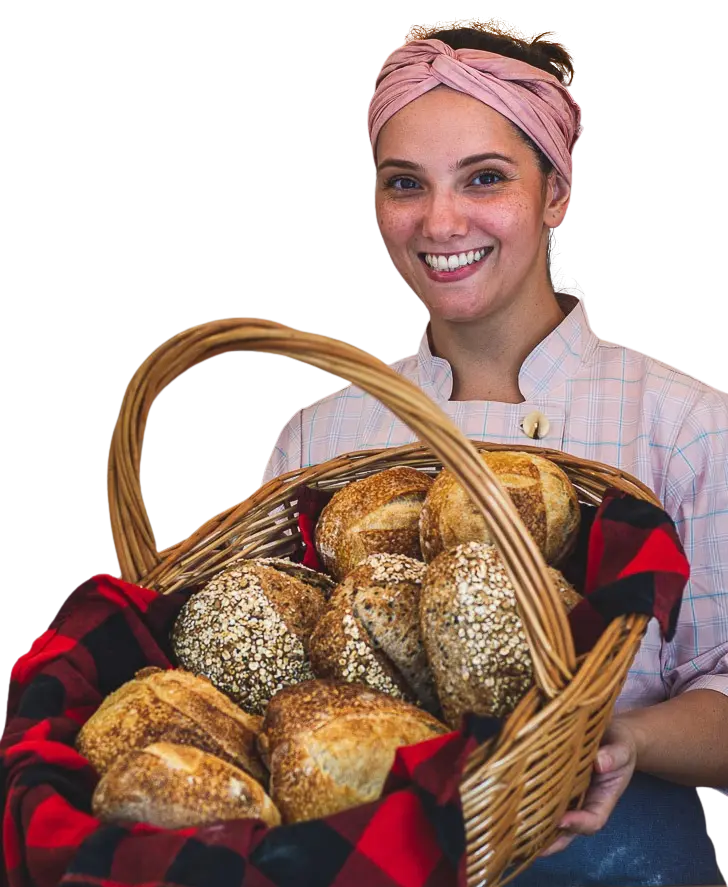

Nosso manifesto
Aqui, nada nasce por acaso. Cada pão, cada massa, cada camada de manteiga leva intenção, carinho, tempo e Alma.
Nós acreditamos que comida de verdade não é apressada. É preparada com mãos que respeitam o ingrediente, que sentem a massa, que entendem o ponto certo de cada fermentação.
Escolhemos ingredientes frescos, honestos, daqueles que entregam sabor profundo e aroma que abraça. Sem atalhos, sem artificial, sem excesso. Apenas o essencial — feito com excelência.
Somos apaixonados por transformar o simples em especial. Por criar sabores sofisticados, mas acessíveis, para que qualquer pessoa possa viver a experiência de comer algo feito com cuidado de verdade.
Na Gastronomida, não vendemos apenas pão. Vendemos afeto, técnica, memória, prazer. Vendemos o resultado de uma cozinha que cozinha com Alma.
Onde estamos